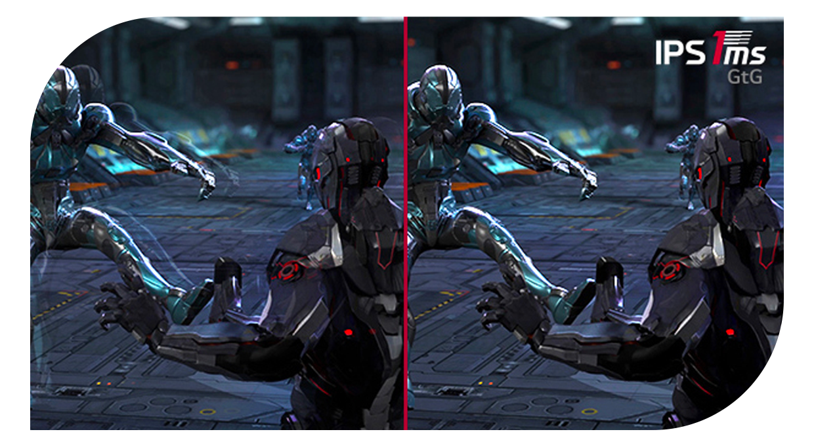

기능 1
IPS™ 1ms 응답속도
게임은 빠름의 미학이니까

* 응답속도를 [매우 빠르게]로 세팅 시, 120Hz 이상 설정하여 사용을 권장합니다.
시청하는 일부 컨텐츠에 따라 잔상이 발생할 수 있으나,
응답속도를 [빠르게]로 설정하시면 증상이 해소될 수 있습니다.
* 소비자의 이해를 돕기 위해 연출된 이미지입니다.
고속IPS패널 탑재를 통해
리얼 1ms대의 응답속도로
보다 박진감 넘치는 게이밍을 즐겨보세요.